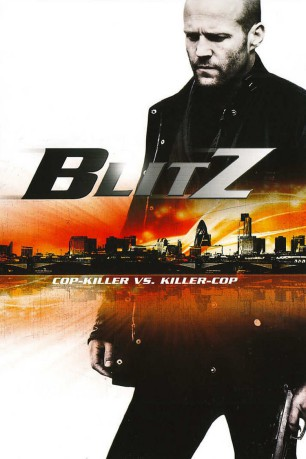

gesehen am 16.11.2015
gesehen am 16.11.2015Alternativ: Blitz gesehen am 16.11.2015
 
 IMDB-Wertung: 6.2 / 10
IMDB-Wertung: 6.2 / 10  Metascore:
Metascore: 
Detective Sergeant Tom Brant ist der härteste Knochen von ganz Ostlondon und steht in dieser Funktion stets mit einem Bein in der fristlosen Entlassung. Nun aber dezimiert ein mysteriöser Copkiller die Bobbys von der Themse einen nach dem anderen aus dem Hinterhalt, und da könnte man einen wie Brant schon gebrauchen. Um ihn einzunorden, zwingt ihn der Chef, mit einem homosexuellen Kollegen als Partner zusammen zu arbeiten. Brant ist wenig begeistert, doch als "die Schwuchtel" sich wider Erwarten bewährt, rauft man sich zusammen...
Jahr: 2011
Dauer: 97 Minuten
FSK: 18
Land: England Studio: Square One EntertainmentTonspuren: DTS - ,
Untertitel:
Auflösung: 1080p (1920x816) Größe: 9861 MB
Genre: Action, Thriller, Krimi
Regisseur: Elliott Lester
Drehbuch: Nathan Parker, Ken Bruen
Soundtrack: Ilan Eshkeri
Darsteller:
 Jason Statham als Brant
Jason Statham als Brant Paddy Considine als Nash
Paddy Considine als Nash Aidan Gillen als Weiss
Aidan Gillen als Weiss Zawe Ashton als Falls
Zawe Ashton als Falls David Morrissey als Dunlop
David Morrissey als Dunlop Ned Dennehy als Radnor
Ned Dennehy als Radnor Mark Rylance als Roberts
Mark Rylance als Roberts Luke Evans als Stokes
Luke Evans als Stokes Ron Donachie als Cross
Ron Donachie als Cross Taylor James als Gym Assistant
Taylor James als Gym Assistant Mens-Sana Tamakloe als Hoodie 2
Mens-Sana Tamakloe als Hoodie 2 Nabil Elouahabi als Witness
Nabil Elouahabi als Witness Rupert Holliday-Evans als Funeral Attendant
Rupert Holliday-Evans als Funeral Attendant Christina Cole als WPC
Christina Cole als WPCDatei: X:\FSK18-2011\Blitz Cop-Killer vs. Killer-Cop (2011, FSK18, 1920x816).mkv seit 13.11.2015
Festplatte: FSK18
 Es gibt insgesamt 30 Filme in der Gruppe 'FSK18-2011'
Es gibt insgesamt 30 Filme in der Gruppe 'FSK18-2011'